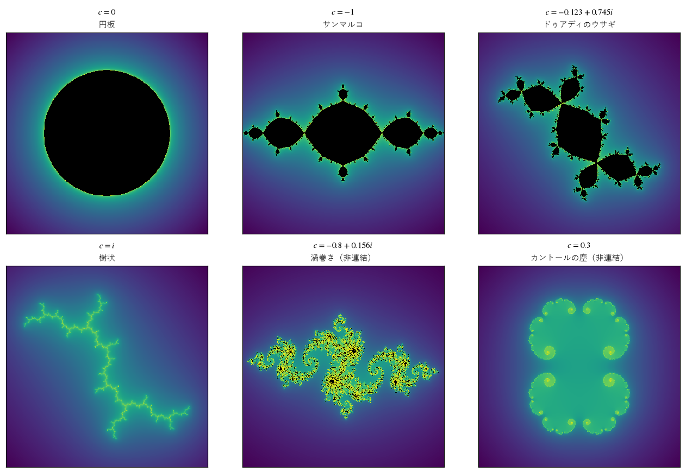
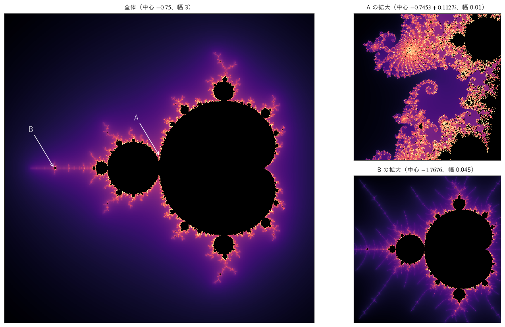
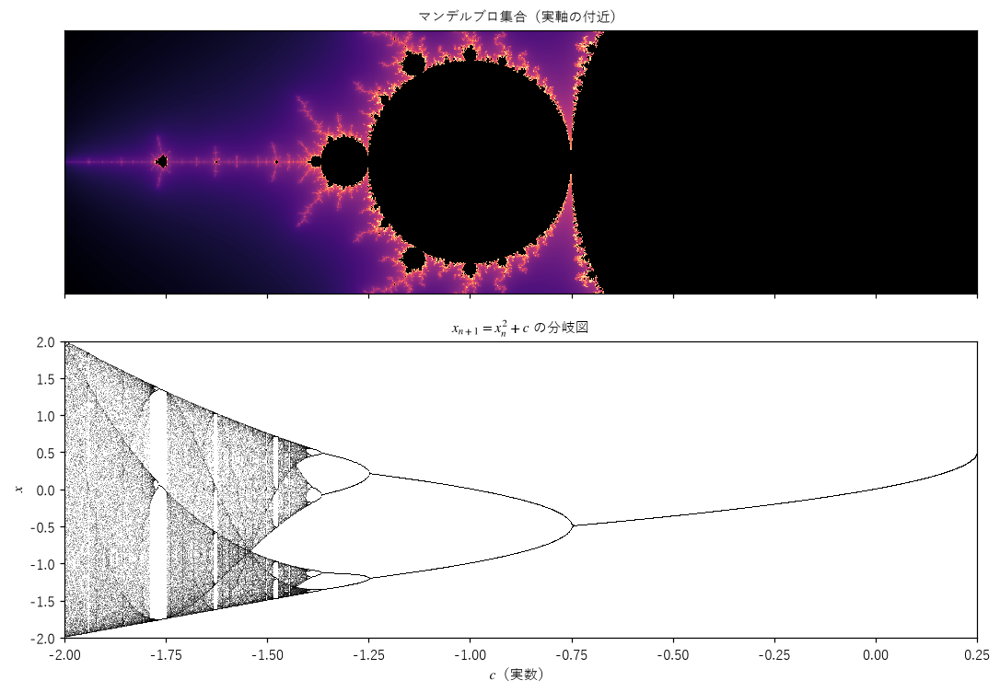
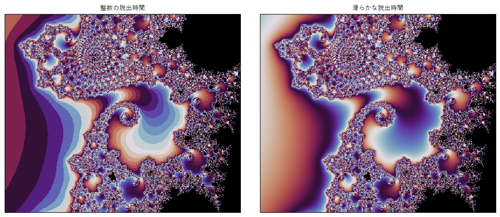
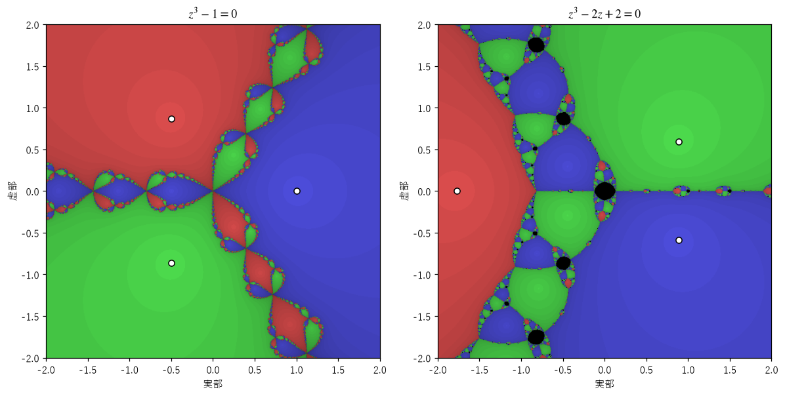
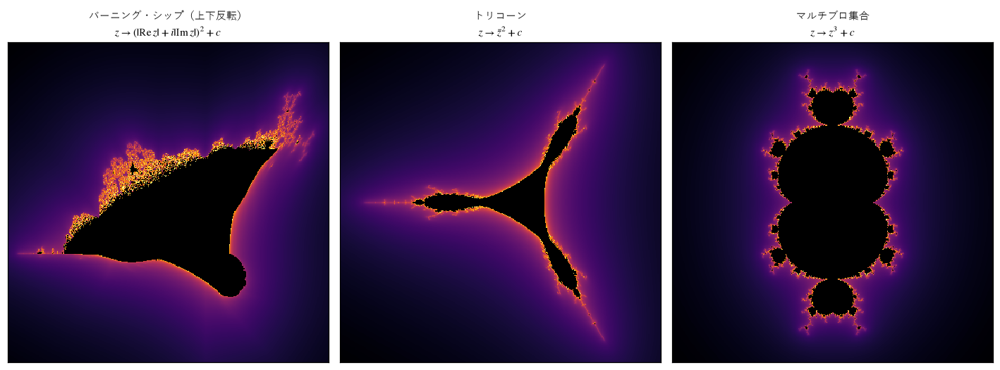

第 9 章 複素力学系：ジュリア集合とマンデルブロ集合
この章では、複素数の写像 \(z \mapsto z^2 + c\) の反復を扱う。式はロジスティック写像と同じくらい単純だが、複素平面に描くと、ジュリア集合やマンデルブロ集合と呼ばれる、無限に複雑で美しいフラクタルが現れる。また、第 4 章のロジスティック写像の分岐図が、マンデルブロ集合の一部として現れることを見る。
複素数の掛け算と 2 乗
複素数 \(z = x + iy\) は、平面上の点 \((x, y)\) と同一視できる。原点からの距離を \(|z|\)（絶対値）、正の実軸から測った角度を \(\arg z\)（偏角）とすると、2 つの複素数の積は、絶対値を掛け、偏角を足したものになる（付録 A）。したがって、2 乗 \(z^2\) は、絶対値を 2 乗し、偏角を 2 倍する操作である。
\(c = 0\) の写像 \(z \mapsto z^2\) を考える。
\(|z_0| < 1\) なら、\(|z_n| = |z_0|^{2^n}\) は 0 に近づく。
\(|z_0| > 1\) なら、\(|z_n|\) は無限大に発散する。
\(|z_0| = 1\) なら、軌道は単位円の上にとどまり、偏角が 1 回ごとに 2 倍される。
最後の場合、偏角を 1 周を 1 とする単位で測ると、偏角の変化は第 5 章で扱った \(\theta \mapsto 2\theta \bmod 1\) そのものであり、カオス的である。つまり、\(z \mapsto z^2\) では、0 に吸い込まれる領域と無限大に逃げる領域の境界である単位円の上で、カオスが起きている。\(c\) を 0 から少しずらすと、この境界の円が複雑にゆがみ、フラクタルになる。
ジュリア集合
\(c\) を固定し、写像 \(f_c(z) = z^2 + c\) を反復する。初期値 \(z_0\) からの軌道が有界にとどまる（無限大に発散しない）点 \(z_0\) 全体の集合を充填ジュリア集合（filled Julia set）\(K_c\) といい、その境界をジュリア集合（Julia set）\(J_c\) という。名前は、1918 年にこの研究を行ったフランスの数学者ガストン・ジュリアに由来する。\(c = 0\) では、\(K_0\) は単位円板、\(J_0\) は単位円である。
ジュリア集合の上では、軌道はカオス的に振る舞う。ジュリア集合のどの点の近くにも、無限大に逃げる点と、逃げない点の両方がある。ジュリア集合は、2 つの異なる運命を分ける、不安定な境界である。
脱出時間アルゴリズム
ある点の軌道が有界かどうかを、有限回の計算で判定する方法がある。\(|c| \le 2\) のとき、ある \(n\) で \(|z_n| > 2\) になると、それ以降 \(|z_n|\) は必ず無限大に発散する。\(|z| > 2\) かつ \(|z| \ge |c|\) なら、
となり、\(|z|\) は反復のたびに一定の割合以上で大きくなるからである。そこで、\(|z_n|\) が 2 を超えるまでの反復回数を数え、決めた上限の回数まで超えなければ、集合に属するとみなす。この反復回数を脱出時間（escape time）といい、脱出時間で点に色を付けて描く方法を脱出時間アルゴリズム（escape-time algorithm）という。
次のコードは、格子状に並べた多数の点を NumPy の配列でまとめて反復する。すでに脱出した点は配列から除き、残った点だけを計算することで速くしている。
44def escape_time(z0: Complex, c: Complex, max_iter: int, step: Step = square_step,
45 radius: float = 2.0) -> tuple[Real, Complex]:
46 """各点の脱出時間と、脱出した直後の z を返す.
47
48 max_iter 回反復しても |z| <= radius のままの点（集合に属するとみなす点）の脱出時間は
49 max_iter にする。計算が済んだ点は配列から除き、残った点だけを反復して速くする。
50 """
51 z = z0.astype(np.complex128).ravel()
52 c = np.broadcast_to(c, z0.shape).astype(np.complex128).ravel()
53 count = np.full(z.shape, float(max_iter))
54 last = np.zeros_like(z)
55 active = np.arange(z.size)
56 for n in range(max_iter):
57 z_act = step(z[active], c[active])
58 escaped = np.abs(z_act) > radius
59 idx = active[escaped]
60 count[idx] = n + 1
61 last[idx] = z_act[escaped]
62 z[active] = z_act
63 active = active[~escaped]
64 if active.size == 0:
65 break
66 return count.reshape(z0.shape), last.reshape(z0.shape)
図 41 は、6 つの \(c\) の値の充填ジュリア集合である。黒い部分が \(K_c\)、その境界がジュリア集合で、外側の色は脱出時間を表す。


図 41 さまざまな \(c\) の充填ジュリア集合（表示範囲は実部・虚部とも \(-1.6\) から 1.6）
\(c = 0\)：単位円板。境界のジュリア集合は単位円である。
\(c = -1\)：大小の円板がくびれでつながった形で、「サンマルコ」（ベネチアの大聖堂にちなむ）と呼ばれる。内部の点は、周期 2 の軌道 \(0 \to -1 \to 0\) に吸い込まれる。
\(c = -0.123 + 0.745i\)：3 つの円板が 1 点で接する形が繰り返される。耳の生えた頭のように見えることから「ドゥアディのウサギ」と呼ばれる。内部の点は周期 3 の軌道に吸い込まれる。
\(c = i\)：内部を持たず、枝分かれした線だけからなる樹状の集合になる。黒い部分がないので、図では脱出時間の大きい点が線の形に並ぶ。
\(c = -0.8 + 0.156i\)：細かな渦巻きが連なった、一見つながった集合に見える。しかし、後で説明する判定法によると、この \(c\) はつながった集合になる範囲のわずかに外にあり、実際にはばらばらの点の集まりである。図に黒い点が残っているのは、反復の上限（300 回）までに脱出しなかった点があるためである。
\(c = 0.3\)：集合はばらばらの点の集まり（カントール集合のような「塵」）になり、面積を持たない。図に黒い部分はなく、脱出時間の大きい点が、塵の分布する場所を示している。
最初の 4 つのジュリア集合は 1 つにつながっている（連結である）が、最後の 2 つはつながっていない。この違いが、次に説明するマンデルブロ集合の定義につながる。
マンデルブロ集合
ジュリア集合が連結になる \(c\) 全体の集合を調べたのが、マンデルブロ集合である。ジュリアとファトゥの研究から、次のことが知られている。
\(J_c\) が連結であるための必要十分条件は、\(z_0 = 0\) から始めた軌道 \(0, c, c^2 + c, \ldots\) が有界であることである。\(J_c\) が連結でなければ、\(J_c\) はばらばらの点からなるカントール集合のような集合になる。
\(z = 0\) は \(f_c'(z) = 2z\) が 0 になる点（臨界点、critical point）であり、臨界点の軌道がジュリア集合の形を決めている。そこで、
をマンデルブロ集合（Mandelbrot set）と定義する。ジュリア集合は \(z_0\) の平面（動かすのは初期値）の図であり、マンデルブロ集合は \(c\) の平面（動かすのはパラメータ）の図である。マンデルブロ集合は、ジュリア集合の「目録」ともいえる。\(M\) の中の \(c\) を選べばつながったジュリア集合が、外の \(c\) を選べば塵のようなジュリア集合が得られる。図 41 の 6 つの \(c\) のうち、0.3 と \(-0.8 + 0.156i\) が \(M\) の外にある。0.3 は、\(M\) が実軸と交わる範囲 \(-2 \le c \le 1/4\) の外である。\(-0.8 + 0.156i\) は \(M\) の境界のすぐ近くにあり、0 からの軌道は 252 回目にようやく半径 2 の円の外に出る。境界の近くの \(c\) では、このように集合に属するかどうかの判定に多くの反復が必要になる。


図 42 マンデルブロ集合（左）と、2 か所の拡大（右）
図 42 の左図は、マンデルブロ集合の全体である。1980 年にマンデルブロが論文で発表し、1985 年ごろから雑誌や書籍を通じて広く知られるようになった。
中央のハート形の部分（主カージオイド）は、\(f_c\) が安定な固定点を持つ \(c\) の集合である。
その左の円板（中心 \(-1\)、半径 1/4）は、安定な周期 2 の軌道を持つ \(c\) の集合である。
主カージオイドの周りに付いた無数の円板（芽）は、それぞれ特定の周期の安定な軌道に対応する。
境界の近くを拡大すると、限りなく複雑な構造が現れる。拡大 A は、主カージオイドと左の円板の間の「タツノオトシゴの谷」と呼ばれる場所で、渦巻きと枝が入り組んでいる。拡大 B は、実軸上の \(c \approx -1.77\) の付近で、マンデルブロ集合全体とそっくりな小さな複製が見える。このような複製は、境界の近くの至るところに無数にある。ただし、複製は全体と完全に同じ形ではなく、マンデルブロ集合は厳密な自己相似性を持たない。また、マンデルブロ集合はひとつながりであること（ドゥアディとハバード、1982 年）、境界のハウスドルフ次元はちょうど 2 であること（宍倉光広、1998 年）が証明されている。
マンデルブロ集合を描くには、\(z_0 = 0\) とし、\(c\) を格子状に並べて脱出時間を計算すればよい。
100def mandelbrot(center: complex, width: float, nx: int, ny: int, max_iter: int,
101 step: Step = square_step, degree: int = 2) -> Real:
102 """マンデルブロ集合（の仲間）の、滑らかな脱出時間の配列を返す（degree は写像 step の次数）."""
103 c = complex_grid(center, width, nx, ny)
104 count, last = escape_time(np.zeros_like(c), c, max_iter, step, radius=1000.0)
105 return smooth_count(count, last, max_iter, degree)
分岐図との対応
マンデルブロ集合と実軸の交わりは、区間 \([-2, 1/4]\) である。実数の \(c\) に対する写像 \(x \mapsto x^2 + c\) は、変数を \(x = r(1/2 - y)\) と置き換えると、ロジスティック写像 \(y \mapsto r y (1 - y)\) に一致する。ただし \(c = r/2 - r^2/4\) である。つまり、実軸の上では、マンデルブロ集合の写像はロジスティック写像と本質的に同じものである。
図 43 は、実軸の付近のマンデルブロ集合と、\(x \mapsto x^2 + c\) の分岐図を、横軸をそろえて並べたものである。


図 43 マンデルブロ集合（上）と、実数の写像 \(x \mapsto x^2 + c\) の分岐図（下）
主カージオイドの左端 \(c = -3/4\) で、分岐図の 1 本の線が 2 本に分かれる（ロジスティック写像の \(r = 3\) に当たる）。
周期 2 の円板の左端 \(c = -5/4\) で、周期 4 に分かれる（\(r = 1 + \sqrt{6}\) に当たる）。
円板がだんだん小さくなりながら左に連なり、\(c \approx -1.4012\) に集積する。ここが周期倍分岐の極限（\(r_\infty\)）である。隣り合う円板の大きさの比も、ファイゲンバウム定数 \(\delta\) に近づく。
\(c = -7/4\) から始まる周期 3 の窓の位置に、図 42 の拡大 B で見た小さなマンデルブロ集合の複製がある。
第 4 章で見た分岐図の構造は、複素平面に広がるマンデルブロ集合の、実軸での断面だったのである。
滑らかな着色
脱出時間は整数なので、そのまま色に変換すると、色が段階的に変わり、等高線のような帯（バンド）が現れる。帯をなくして滑らかに色を変えるには、脱出した直後の \(|z_n|\) の大きさを使って、脱出時間を実数に補正する。
脱出した後は \(|z_{n+1}| \approx |z_n|^2\) なので、\(\log|z_n|\) は 1 回ごとにほぼ 2 倍になり、\(\log\log|z_n|\) は 1 回ごとにほぼ \(\log 2\) ずつ増える。そこで、
とすると、\(\nu\) は場所によって連続的に変わる値になる。\(z^d + c\) の場合は \(\log 2\) を \(\log d\) に変える。この補正は、\(|z_n|\) が十分大きいときに正確になるので、脱出の判定に使う半径を 2 より大きくする（サンプルでは 1000 にしている）。
69def smooth_count(count: Real, last: Complex, max_iter: int, degree: int = 2) -> Real:
70 """連続的な脱出時間 ν = n + 1 - log(log|z|) / log(d) を返す（集合内の点は NaN）.
71
72 整数の脱出時間で色を付けると、色の境目が等高線のような帯（バンド）になる。
73 脱出した直後の |z| の大きさを使って、帯の間を滑らかにつなぐ。d は写像の次数
74 （z^2 + c なら 2）である。
75 """
76 with np.errstate(divide="ignore", invalid="ignore"):
77 nu: Real = count + 1.0 - np.log(np.log(np.abs(last))) / np.log(degree)
78 nu[count >= max_iter] = np.nan
79 return nu
図 44 は、拡大 A と同じ場所を、整数の脱出時間（左）と補正した脱出時間（右）で着色したものである。色が周期的に変わるカラーマップを使って違いを強調している。


図 44 整数の脱出時間（左）と滑らかな脱出時間（右）による着色
また、脱出時間は集合の境界に近づくと急に大きくなるので、そのまま色に変換すると、ほとんどの部分が同じ色になってしまう。本章の図では、脱出時間の対数をとってから色に変換している。どのような関数で色に変換するかは、作品の印象を大きく左右する。第 12 章で詳しく扱う。
ニュートン法フラクタル
第 2 章で、ニュートン法は方程式の解を超安定な固定点とする写像の反復であることを見た。複素数の方程式 \(p(z) = 0\) に対しても、ニュートン法 \(N(z) = z - p(z)/p'(z)\) は使える。解が複数あるとき、複素平面の各点から出発したニュートン法が、どの解に収束するかで色分けすると、図 45 のような図になる。この図をニュートン法フラクタル（Newton fractal）という。


図 45 ニュートン法フラクタル。白丸は方程式の解、色は収束した解、明るさは収束の速さを表す。黒は解に収束しなかった点。
左図は \(z^3 - 1 = 0\) の場合で、3 つの解 \(1\)、\(e^{\pm 2\pi i/3}\) のそれぞれに収束する領域（吸引領域、basin of attraction）が色分けされている。解の近くでは領域は単純だが、領域の境目では 3 色が複雑に入り組んでいる。この境界には、どの点の近くにも 3 つの吸引領域がすべて現れるという、驚くべき性質がある。2 つの領域が接する境目には、必ず 3 つ目の領域が入り込んでいるので、境界は無限に細かい構造を持つフラクタルになる。この境界は、写像 \(N\) のジュリア集合である。
右図は \(z^3 - 2z + 2 = 0\) の場合で、黒い領域が現れている。\(N(0) = 1\)、\(N(1) = 0\) となるので、0 と 1 は周期 2 の軌道を作り、しかもこの軌道は安定である。その周りの点はどの解にも収束せず、周期 2 の振動に吸い込まれる。ニュートン法は、初期値によっては解に収束しないことがあり、その領域もまたフラクタルな形をしている。
さまざまな変種
写像の式を変えると、マンデルブロ集合に似た、さまざまな集合が得られる（図 46）。


図 46 マンデルブロ集合の変種
バーニング・シップ（burning ship）：各反復の前に、実部と虚部の絶対値をとる。燃える船のような形になる。慣例に従い、上下を反転して表示している。
トリコーン（tricorn）：\(z\) の代わりに共役複素数 \(\bar{z}\) を 2 乗する。三角帽子の形になる。
マルチブロ集合（multibrot set）：\(z^d + c\) を使う。\(d = 3\) では左右対称な形になり、主な部分が \(d - 1 = 2\) 回の対称性を持つ。
マンデルブロ集合の写像 \(z^2 + c\) は、複素数の意味で微分できる（正則な）写像なので、ジュリア集合やマンデルブロ集合について多くの定理が成り立つ。バーニング・シップやトリコーンの写像は正則でないので、それらの定理は使えないが、見た目には興味深い構造が現れる。ジェネラティブアートでは、このように式を自由に変えて、新しい形を探すことができる。
まとめ
複素数の写像 \(z \mapsto z^2 + c\) の軌道が有界にとどまる初期値の集合が充填ジュリア集合、その境界がジュリア集合である。
軌道が半径 2 の円の外に出れば発散することを使い、脱出時間で色を付けて描く。
マンデルブロ集合は、臨界点 0 の軌道が有界になるパラメータ \(c\) の集合で、ジュリア集合が連結になる \(c\) の集合と一致する。
マンデルブロ集合の実軸上の構造は、ロジスティック写像の分岐図と対応している。
ニュートン法の吸引領域の境界もフラクタルになる。